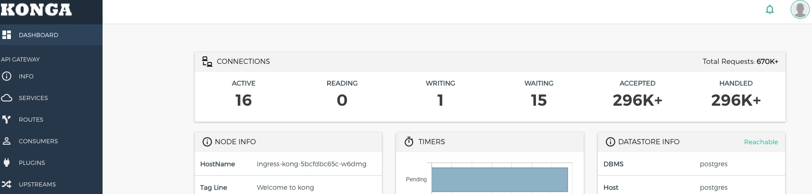
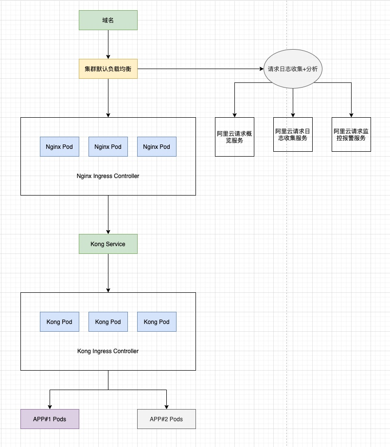
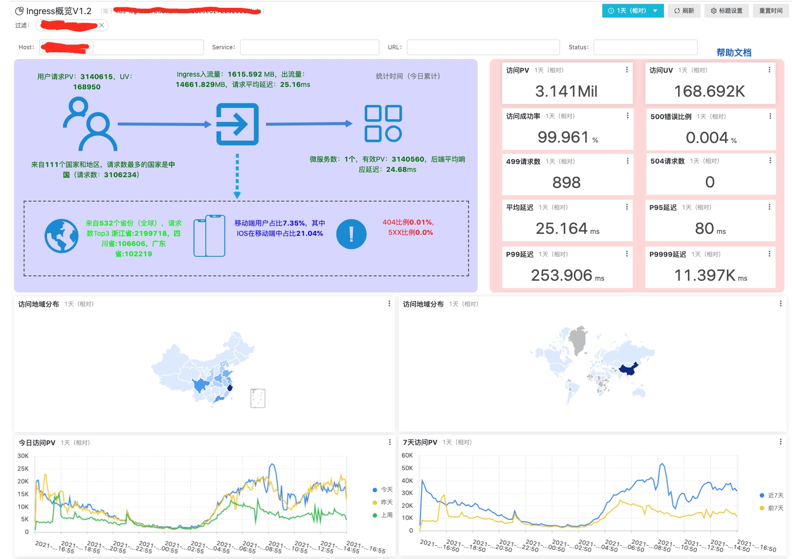
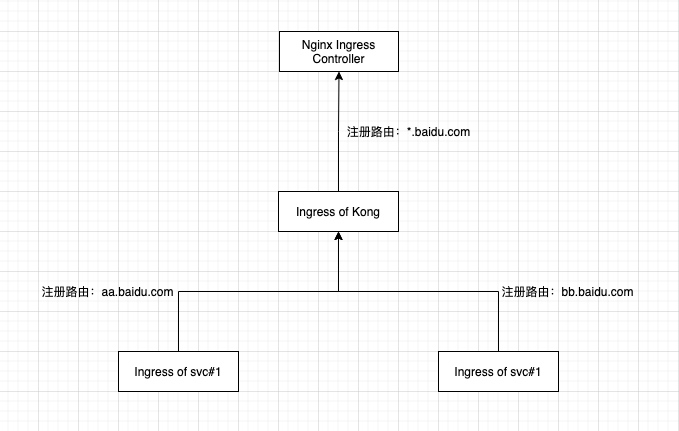

准备工作：
- 了解 Kong Gateway（社区版）。
- 阿里云 Kubernetes 集群。
- KIC（Kong Ingress Controller) 官方指导文档：https://docs.konghq.com/kubernetes-ingress-controller/1.1.x/guides/getting-started/。
相关代码见：https://github.com/yuyulei/blog-codes
部署
部署组件
- Kong Ingress Controller（包括 Kong Gateway 和 controller）
- 来源：Get started 和 yaml 文件。
- Konga（免费的 UI 界面）
- 来源：github konga。
- DB 模式
前两点，按照说明文档安装即可，第三点我们简单说明一下。
普通场景下，我们通过 Kong Admin API 操作 Kong 中的各种内部资源（Services，Routes，Upstreams，Targets，Plugins 等），然后保存在数据库里的（方便多个 Kong 实例共享数据）。但是在云原生环境中，Kong Ingress Controller 尝试将 K8s 里的资源概念转化为 Kong 的内部资源，比如说将 K8s 的 Pods 转化为 Kong 的 Targets。换言之，在普通场景下，Kong 中的内部资源来源自 Admin API 调用，而云原生场景下，来源自 K8s 资源对象。两种来源实际上 Kong Ingress Controller 都支持，但是为了避免冲突，官方推荐使用 DBLess 模式，也就是推荐所有内部对象均来源自 K8s 资源，某种程度上也简化了部署。
但在生产使用中发现，DBLess 模式带来了一些弊端：
- 无法通过 Admin API 对 Kong 执行所有的写请求相关的操作（因为无数据库保存，只能保存在内存中，一旦重启就丢数据）。
- Kong 实例间无法共享配置信息，限流限速数据，甚至缓存内容。因此最终的结论是
为了避免操作冲突，达成操作共识：
- 开启 DB 模式
- Kong 中的 Routes，Services，Upstream，Targets 完全交于数据由 Controller 同步。
- Kong 中的 Plugins 数据完全由 AdminAPI（也就是 konga 界面操作而来）操作。
部署细节
KIC（Kong Ingress Controller）
主要 yaml 文件参考对应 github repo 里的链接，做以下几处修改：
#1
- name: KONG_ADMIN_LISTEN
value: '0.0.0.0:8001, 127.0.0.1:8444 ssl'
#2
- name: KONG_DATABASE
value: postgres
- name: KONG_PG_HOST
value: postgres
- name: KONG_PG_USER
value: kong
- name: KONG_PG_PASSWORD
value: kong
第一点是开放 HTTP Admin 接口给 konga，第二点是依赖的 DB，注意这里 DB Host 填 postgres，是依赖了 K8s service DNS 方式。如果是外部的 DB，可能要将地址填完整。
另外，修改 Service kong-proxy 的端口，增加 Admin 端口和监控采集端口，如下
- name: admin
port: 8001
protocol: TCP
targetPort: 8001
- name: monitor
port: 8100
protocol: TCP
targetPort: 8100
selector:
app: ingress-kong
type: LoadBalancer
LoadBalancer 类型的 Service 会由云厂商的具体实现，像阿里云的话会自动生成一个与之匹配的负载均衡。
konga
主要 yaml 文件来自 github konga，但是我们为其增加了一个指定到数据库，如下
env:
- name: DB_ADAPTER
value: postgres
- name: DB_HOST
value: postgres
- name: DB_PORT
value: "5432"
- name: DB_USER
value: kong
- name: DB_PASSWORD
value: kong
- name: DB_DATABASE
value: konga
- name: DB_PG_SCHEMA
value: konga
因为 konga 数据量很小，我们简单与 Kong 共享一个数据库。
DB
我们强烈推荐 Postgres，简单点的话可以用 K8s EmptyDir 作为数据挂载点，但是生产的话可以以实际的盘作为挂载点。
初步部署
等待上面三组件部署完成，我们应该可以直接访问 konga 界面。
如果有公网域名，我们可以将公网域名指到负载均衡 SLB 访问，还需要为 konga 向 Kong 注册一个路由（ingress 方式）。
如果没有公网域名，我们可以将 konga Pod/Service 端口暴露出来，例如
kubectl port-forward pod/konga-bdddd476b-ms2rw 8337:1337 -nkong
浏览器访问 localhost:8337

回到阿里云
现方案链路如下

上面的方式是没有问题的，但是我们是利用阿里云提供的请求概览，请求日志分析等功能，我们选在把 Kong 网关接在集群默认 Nginx Ingress Controller 之后（阿里云中的 K8s 集群会默认自带一个 Nginx Ingress Controller）。

我们把 Kong 作为一个特殊的服务，承载所有业务请求，然后 Kong 实例根据保存的路由关系，选择将请求转发到对应方后端实例上。通过阿里云默认负载均衡对所有请求加以分析和统计。
下面是请求概览的展示，十分适合业务开发人员的查阅。

调整细节
为了达到上述的效果，我们需要做以下调整。
- 准备 Kong Service，并对应到 Kong Pods。
- 创建 Kong 对应的 Ingress，注册路由到 Nginx Ingress Controller 下。
- 创建所有业务应用对应的 Ingress, 注册路由到 Kong Ingress Controller 下。
apiVersion: extensions/v1beta1
kind: Ingress
metadata:
annotations:
kubernetes.io/ingress.class: nginx
name: kong-proxy
namespace: kong
spec:
rules:
- host: '*'
http:
paths:
- backend:
serviceName: kong-proxy
servicePort: 80
...
kong-proxy 是 Kong 网关对应的 K8s Service。
通过 kubernetes.io/ingress.class: nginx，将 Kong Service（kong-proxy）支持的路由规则，注册到 Nginx Ingress Controller 之下。
同理，具体某个服务的路由规则通过 K8s Ingress 和 kubernetes.io/ingress.class: kong 注册到 Kong Ingress Controller 之下。
一环扣一环，将整个链路连起来。但我们注册路由规则时注意，前者注册 NIC 时可以使用通配符，后者注册 KIC 时可以细化，如下

总结
通过简单部署，将整个链路走通，然后选择适配云厂商提供的服务，进行链路调整，最终形成最后的链路形态。